핸드폰에 있던 음식사진 털이 :)
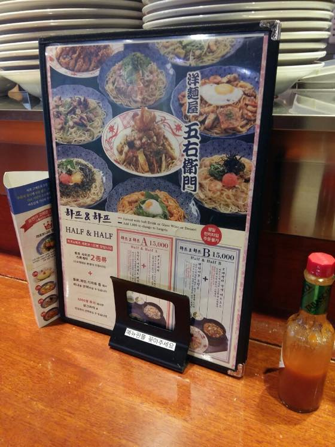
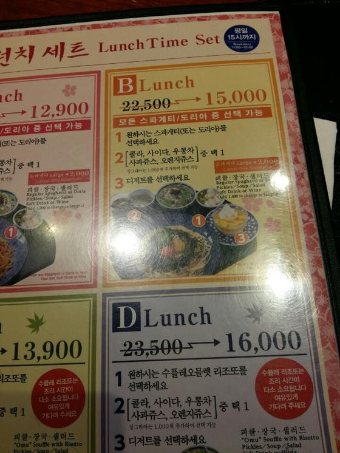
강남 고에몬
시작(...)은 판교 현백에서 엄청 좋아하던 메뉴가 있었는데 이름은 기억못하고
일본 가정식 차가운 명란 우동 샐러드(.....)라고 기억하는 가게가 있었음.
오랜만에 한국 돌아와서 다시 찾아가봤더니 메뉴가 바뀐건지 가게가 아예 사라진건지 내가 못 찾았던 건지 모르겠지만;;
여튼 비슷한 메뉴/비슷한 가게는 있어도 내가 먹던게 없는거임;;
해서 이때부터 명란우동 & 명란파스타의 집착이 시작되었음;;;;
인터넷 검색하다가 찾은 강남 고에몬 가서 먹고왔습니다 ^^;;;
런치세트 B - 명란크림파스타 + 콜라 + 크림브륄레
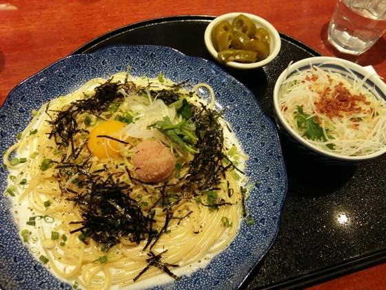
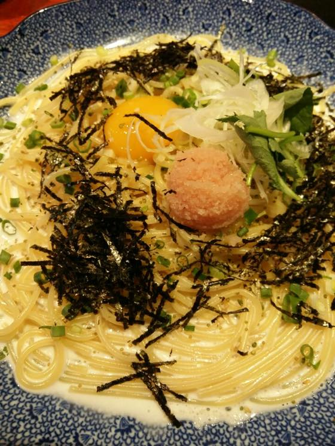
알흠답다 ;ㅂ;
소원풀었어요 홋홋
일본식 파스타 좋아합니다 :)
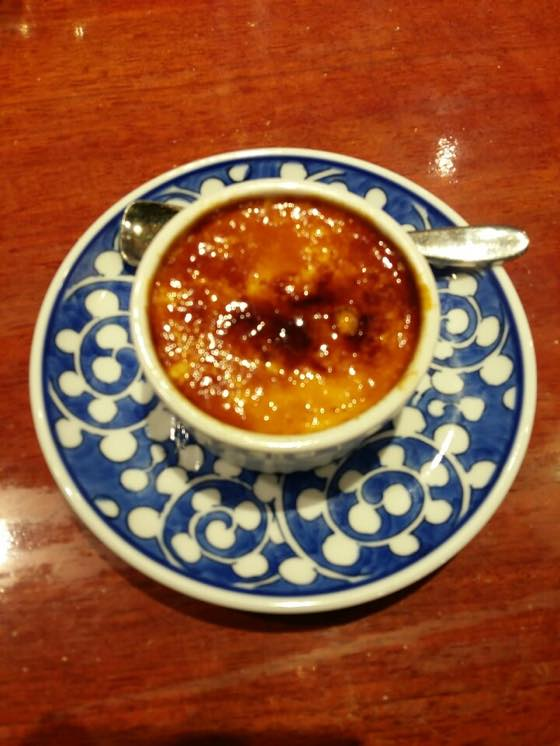
디저트까지 야무지게 먹고 나옴 :)
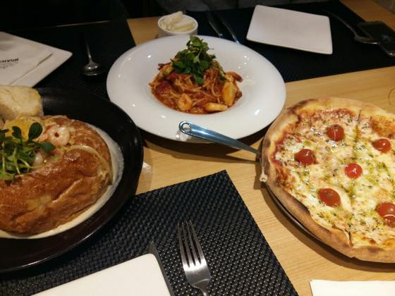
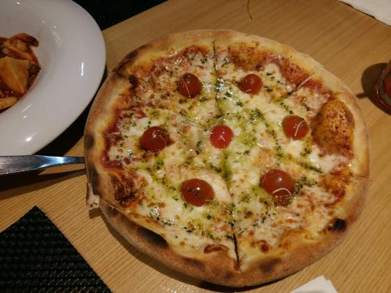
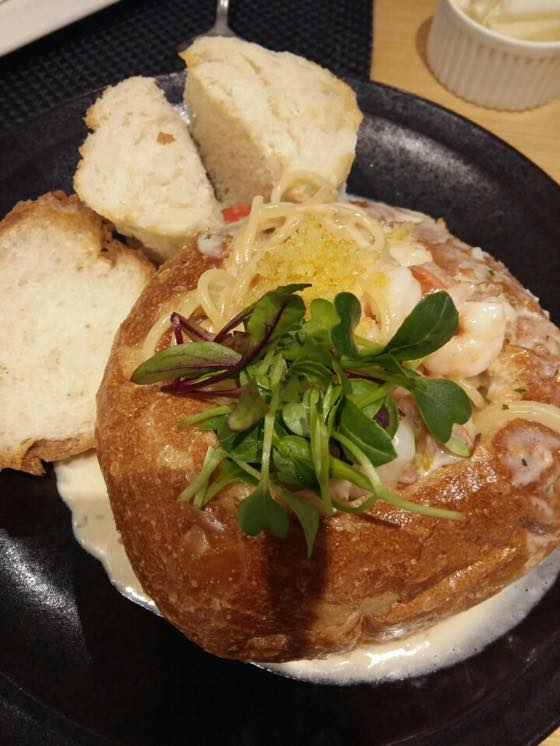
요건 동생곰 부부랑 천호 현백 나들이
노아레스토랑 빠네 + 피칸테 + 마르게리따
이탈리안레스토랑서 빠네 오랜만에 먹으니 맛남.
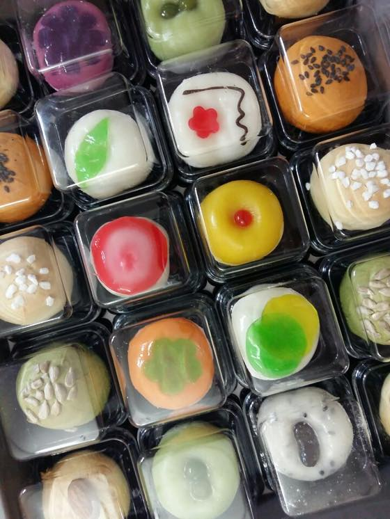
화과자가 선물로 들어옴
만세!! 하루에 하나씩 야곰야곰 까먹으며 행복해 하고 있습니당 :D :D :D
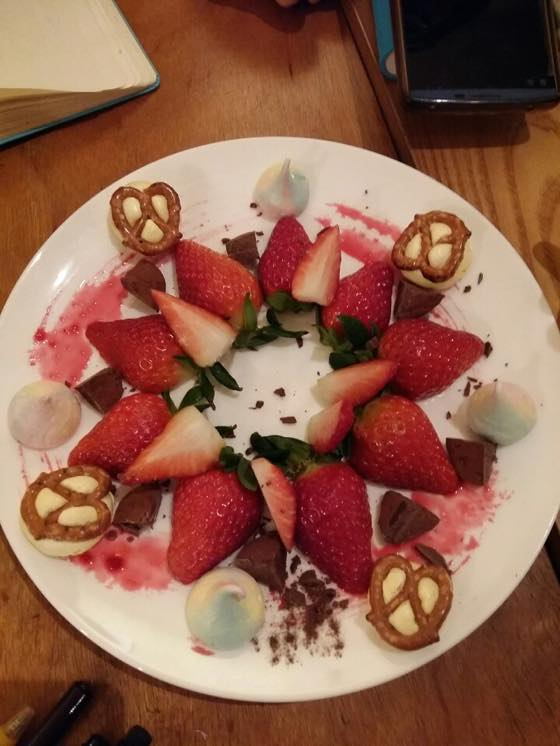
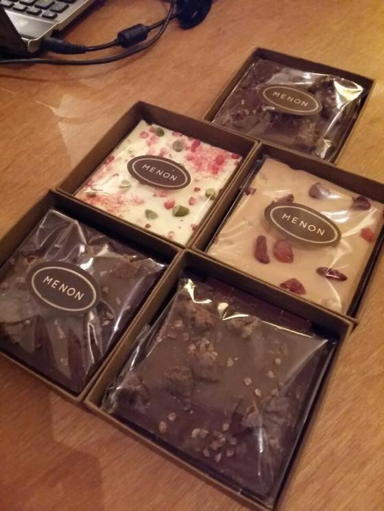
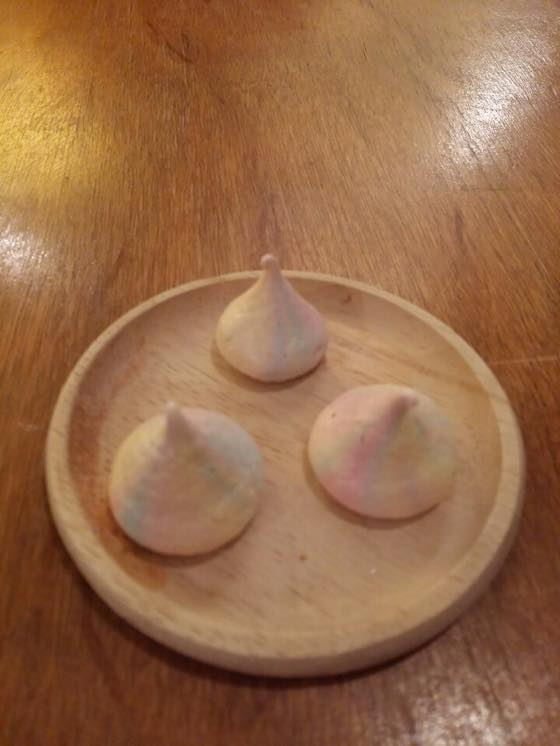
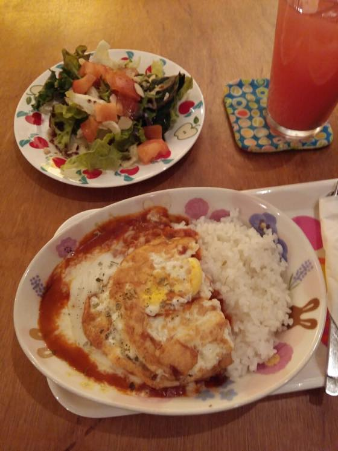
드로잉 클럽 홍단
카페슈풍크서 거하게 잘 먹었음
발렌타인데이라 한분이 쪼코를 선물받았다고 마구 나눠주심
위 4장이 모두 한자리에서 먹은것들임 ㅋㅋㅋㅋㅋㅋㅋㅋ 커피숍 3시간정도 앉아있으면서 내 배속으로 들어간것들 ㅋㅋㅋ
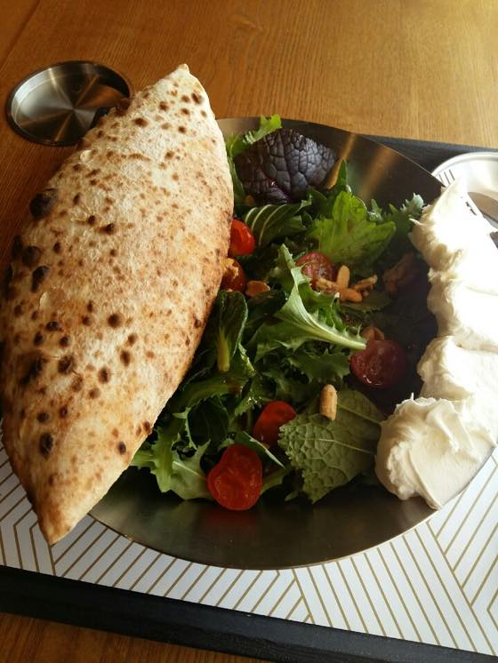
리코타치즈 샐러드 + 커피 조합이 급 땡겨서 혼자 먹으러감
서현역 근처인데 빵이 바뀌었다.
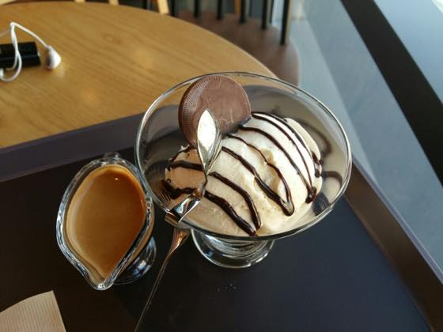
동네 커피숍서 아포가토
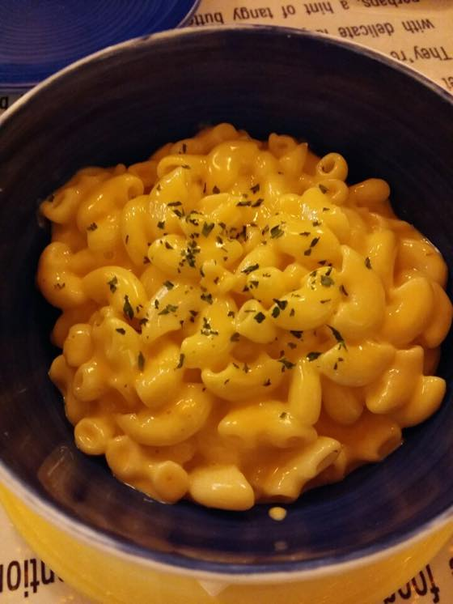
마카로니앤치즈
이날 동생곰과 버터핑거팬케익 가서 밥먹는데 다른사진은 죄다 흔들리고 이사진만 건짐 ^^;;;
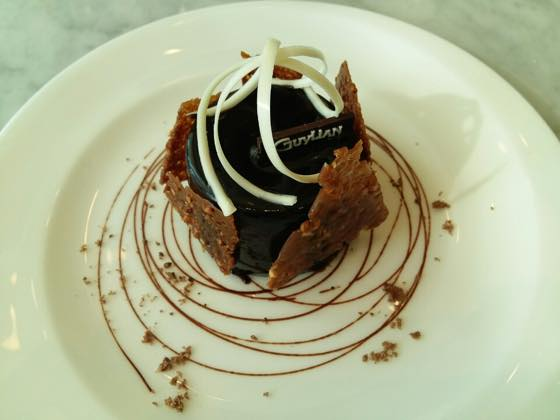
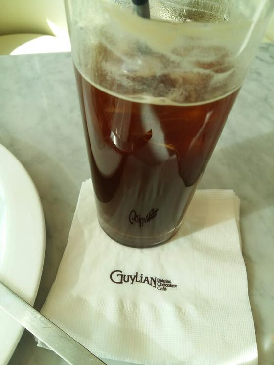
잠실 길리안 카페
초코무스 & 파나코타 가 먹고싶어서 갔는데
막상 가서 먹으니까 느므 달아서 남겼다 ^^;;;
기억속에서 맛이 느므 미화되었었나;; 처음 먹었을때 완전 감동했었는데 ^^;;;
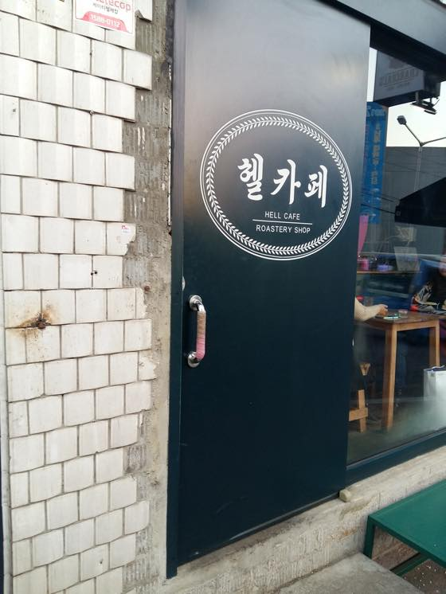
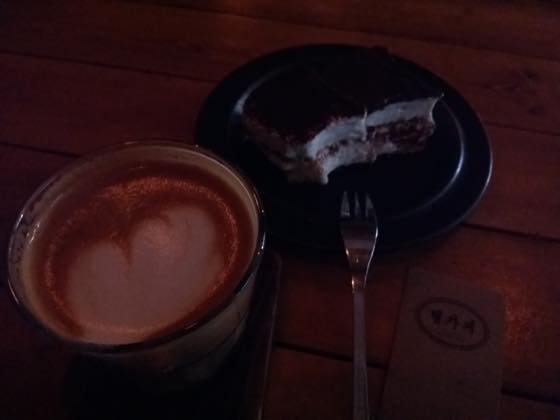
헬카페
헬라떼 + 티라미슈 :)
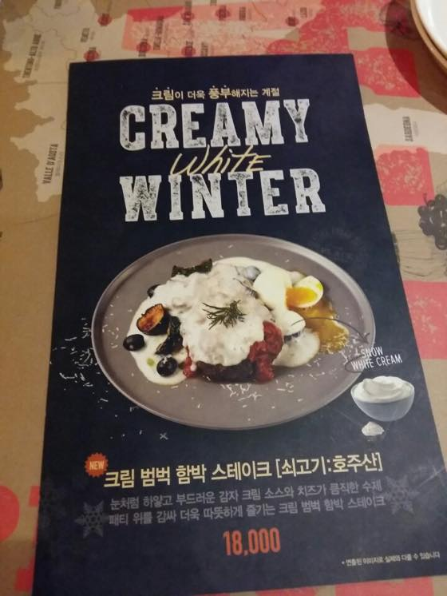
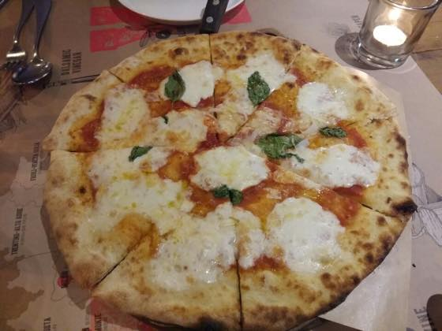
코엑스 더 플레이스
이곳도 동생곰이랑 댕겨옴
파스타가 검은색 뚜껑에 뎦여 나오고 불을 붙여주는데
아무정보없이 동생곰 따라간거라 저게 뭥미? 왜 검은천에 덮어나오지? 싶었는데 빵이었음 ㅋㅋㅋㅋㅋ
위에 빵은 알콜향이 살짝 남아있어서 촘 먹다 말았습니다.
음식은 나쁘진 않았어용
*불 붙이기 전에 사진이나 동영상 찍을거냐구 물어보더라구요 :) 해서 찍었습니다 ㅋㅋ
동생곰이 찍은 동영상: